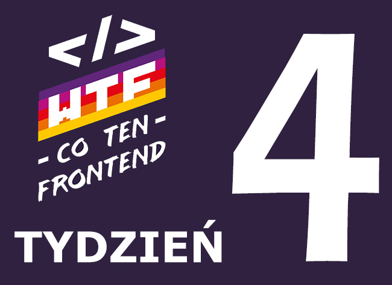

5.02 WTF: Klan
Klan jest to DOM jako rodzina elementów. Każdy element tego domu nazywamy węzłem/node.
Klan jest to cała struktura arkusza HTML i jego budowa jest porównywana do drzewa
genealogicznego gdzie występują różne pokolenia elementów.
Dziedziczenie – polega na przekazywaniu atrybutów rodzica do poziomu niżej czyli wszystkich
dzieci pod warunkiem, że nie są na nowo zdefiniowane.
Są elementy, które mają zdefiniowane domyślne style w przeglądarkach i w takiej sytuacji w
pierwszej kolejności te style są narzucane elementom.
• wartość: inherit; - ta wartość jawnie definiuje nam, że element ma dziedziczyć style z
rodzica/body lub elementu, który jest poziom wyżej.
5.03 JS: Funkcje
Czym jest funkcja?:
- Na wejściu dostaje dane – argumenty
-Dla każdego argumentu zwraca jakąś wartość
-Posiada określony wzór
Funkcja w JS nie różni się dużo w porównaniu z matematyczną (poniżej przykład zapisania najprostszej
funkcji JS):
„function calculate(myNumber){
return myNumber*7;
}
„function” to deklaracja
„calculate” to nazwa funkcji
„(myNumber)” to Parametr
„return” to Słowo kluczowe
„myNumber*7” to Wynik
Jeśli funkcja nie ma zdefiniowanej wartości „return” to otrzymujemy undifined ale polecenia
wewnątrz funkcji się wykonują.
Return może być zupełnie innego typu niż własności które definiujemy w funkcji.
Funkcja może przyjmować więcej wartości niż pojedyncza liczba lub napis.
Funkcja w JS
-Deklarujemy nazwę funkcji
-W środku dokonujemy obliczeń/wykonujemy zadania
-Funkcja przyjmuje argumenty (ale nie musi)
-Funkcja zwraca zawsze coś (nawet jeśli nie mamy „return” – wtedy funkcja zwraca
„undefined”
Drugi sposób zapisywania funkcji w JS tzw. „(Fat) arrow function”:
const calculate = (myNumber) =>{
myNumber = myNumber + 3;
konsole.log(myNumber);
return myNumber*7;
}
(Fat) arrow function:
- Skraca zapis deklaracji funkcji
- Zwiększa czytelność
- Nie tworzy nowego kontekstu „this”, nie ma dostępu do „arguments” i „super”
- Nie jest zamiennikiem „tradycyjnej” funkcji
5.04 JS: Obiekt
JavaScript jest językiem obiektowym a to oznacza, że prawie wszystko w nim jest obiektem a nawet
jeśli typy proste, które nie są obiektami to tak się zachowują.
Obiekt jest strukturą danych
5.05 JS: Immutability w obiektach
Immutability mówi nam, że nie możemy zmieniać wartości primitive values w JS. To co zmieniamy to
połączenie między nimi a zmiennymi.
Połączenie nazwy zmiennej do obiektu jest sztywne nie może zostać przepięte natomiast połączenie
między obiektem a wartością są zdefiniowane jako let i możemy je przepinać.
Nazywamy to mutowaniem obiektu.
Magia JS i mutowania polega na tym, że wszystko opiera się na połączeniach a nie na
wartościach.
5.06 U mnie (nie) działa
„W życiu każdego programisty i programistki przychodzi taki motyw kiedy nie działa”
M.Korsan
Proces szukania błędów i naprawiania ich w naszym kodzie to Debugging.
Co należy zrobić gdy nie działa:
- Sprawdzić czy jest zapisany plik.
- Sprawdzić czy edytujemy poprawny plik
- Sprawdź czy odświeżyłeś przeglądarkę (Ctrl + f5)
- Sprawdź czy nie ma błędów w edytorze/devtoolsah
- CZYTAJ BŁĘDY
- Zajrzyj w zakładkę Network
- „Pogadaj z Kaczką”
- Sprawdź w Google. (bierz pod uwagę porady z datą max. do roku wstecz jedna z najbardziej
rekomendowanych stron do szukania błędów to stackoverflow).
5.07 HTML: Listy, tabele, definicje
Nowe znaczniki:
- <ul> - Unordered List – nieuporządkowana lista, każdy element ma taką samą ważność.
- <li> - list item – służy do wypisania elementów listy.
- <ol> - odpowiada za listę uporządkowaną.
-<dl> - Description list –
-<dt> - Description terem – znacznik podlegający „dl” oznacza termin, który chcemy
opisać.
-<dd> - Description details - znacznik podlegający „dl” oznacza szczegóły terminu, który
opisujemy.
<table> - Tabela – tabeli używamy tylko wtedy gdy mamy dane, które wpisujemy normalnie w
tabelę np. jakieś spisy itp.
-<tr>- znacznik, który używamy razem z <table> oznacza on wiersz tabeli.
-<td> - znacznik, który używamy razem z <table> oznacza on komórkę tabeli.
-<thead> - znacznik, który używamy razem z <table> oznacza on nagłówek tabeli.
-<th> - komórka w nagłówku tabeli
-<tbody> - Ciało tabeli
-<caption> Opis tabeli
Znaczniki „dl”, „dt”, „dd” możemy użyć do wypisywania listy definicji/wskazówek.
Nowe własności CSS:
- list-style(-type) – własność, która odpowiada za styl listy
Aby zagnieździć listę musimy dodać ją do jednego elementu listy, która jest nadrzędną listą.
5.08 Normalizacja vs reset
Reset – Jest to technika wykorzystywana do usunięcia wszystkich stylów domyślnych przeglądarki dla
naszej strony.
Nie jest to zalecana technika postępowania ze stroną.
Normalizacja – plik .css udostępniony do pobrania, który usprawnia wyświetlanie elementów
stylowanych domyślnia pomiędzy przeglądarkami.
5.09 Flexbox
Flexbox jest to własność, która służy do rozmieszczania elementów na stronie.
Nowe własności CSS:
- display: flex; - własność, która zamienia domyślny display Block na nowy system
pozycjonowania i rozmieszczania elementów.
Flex pracuje w dwóch osiach: oś pozioma(row) i oś pionowa(column)
- flex-direction: „row” – jest to domyślna wartość flex i ustawia wszystkie elementy wg. osi
poziomej,
„kolumn” – wartość, która ustawia elementy wg osi pionowej, „row-reverse” – wartość, która
ustawia elementy wg. osi poziomej przesuwając je do krawędzi prawej w odwróconej kolejności,
„column-reverse” –wartość, która ustawia elementy wg. osi pionowej przesuwając je do krawędzi
dolnej w odwróconej kolejności.
- flex-wrap: „nowrap”- domyślna wartość flex, „wrap” – wartość, która ustawia wielkość
elementu wg. własności wpisanych w css, „wrap-reverse” - wartość, która ustawia wielkość elementu
wg. własności wpisanych w css przesuwając je do przeciwnej krawędzi w odwróconej kolejności.
Flex-wrap -odpowiada za zawijanie wiersza/kolumny).
- flex-flow: row nowrap; jest to skrócona wartość, w której podajemy <flex-direction>
oraz <flex-wrap>.
- justify-content (ustawianie elementów wzdłuż osi flex-direction): „flex-start” – domyślna
wartość, „flex-end” – przykleja do prawej krawędzi kontenera, „center” – wyśrodkowuje
elementy, „space-between” – liczy przestrzenie wolne między elementami i tworzy pływający
margines w momencie w, którym się stykają spadają na dół przestrzeń między nimi w obrębie
pojedynczego wiersza jest równa, „space-around” – działa podobnie jak „space-between” dodając
margines na zewnątrz elementu, który wynosi połowę środkowego.
- align-content (ustawia wiersze/kolumny wzdłuż osi przeciwnej do flex-direction (tak jak
justify-content dla drugiej osi)): „stretch”, „flex-start”, „flex-end”, „center”, „space-between”,
„space-around”.
- align-items (ustawianie elementów wzdłuż osi przeciwnej do flex-direction): „stretch”,
„flex-start”, „flex-end”, „center”, „baseline”.
- align-self (ustawianie pojedynczego elementu wzdłuż osi przeciwnej do flex-direction):
„stretch”, „flex-start”, „flex-end”, „center”, „baseline”.
- order (kolejność): 0;
- flex-grow: - jest to współczynnik, który odpowiada za to jak bardzo nasz element powinien
„rosnąć” w wierszu jeśli zostaje jakaś przestrzeń tak aby ten wiersz wypełniał.
- flex-shrink: - współdziała z flex-grow i przy ustawieniu wartości na 0 sprawia, że
elementy nie mogą się „skurczyć” poniżej minimalnej wartości.
- flex-basis: - rozmiar bazowy, wskazanie minimalnej wartości szerokości lub wysokości
elementu.
- flex (skrót, który opisuje własności): <flex-grow> <flex-shrink>
<flex-basis>
5.10 Tła
Wszystkie tła na stronie definiowane są w arkuszach CSS jako własność „background”.
Własności background w CSS:
- background-image: url(‘sciezka-do-pliku’);
- background-position (ustawia tło względem elementu, który to tło dostaje domyślna wartość to 0,
0).;
- background-repeat (daje możliwość definiowania powtarzania się tła): „repeat” – domyślna wartość
rozszerza tło w każdym kierunku, „repeat-x” – tło powtarza się tylko po osi x w centrum, „repeat-y”
- tło powtarza się tylko po osi y w centrum, „no-repeat” tło ma być niepowtarzalne, „round” – otacza
nasz element, „space” – obrazek jest powtarzany w taki sposób aby się zmieścić w całości bez
przycięcia.
- background-attachment: „scroll” – sprawia, że tło przesuwa się wraz ze stroną, „fixed” – tło jest
nieruchome zostaje w miejscu przy scrollowaniu strony, „local” – sprawia, że tło przesuwa się razem
ze scrollowaną treścią.
- background-orgin( definiuje w, którym miejscu powinno się zaczynać): „padding-box” -,
„border-box”, „content-box”
- background-clip (własność, która mówi nam w, którym miejscu tło powinno być cięte odpowiednio pod
borderem, puddingiem oraz contentem): „border-box” - , „padding-box”, „content-box”
- background-color (wypełnia tło wybranym kolorem): (własność koloru);
Tło może być półprzeźroczyste dzięki specjalnej składni kolorów RGB(a) własność a ustala
przeźroczystość.
- background-size (określa wielkość tła): „auto” – domyślna wartość, ”cover” – obrazek zawsze będzie
wypełniał całość strony, „contain” - obrazek w tle jest widoczny w całości, <width>,
<height>
Gradienty – własność css, która pełni funkcję ozdoby strony lub przejścia np. między kolorami, można
wygenerować kod css ze strony https://cssgradient.io/gradient-backgrounds/
5.11 Grafik cięcie - też zajęcie
Jednym z najpopularniejszych programów do budowania layoutów jest program „Figma”
Aby pobrać repozytorium z GitHub na nasz komputer klikamy Clone Or Download, następnie kopiujemy
link.
W terminalu wchodzimy w wybrany katalog w którym nie ma jeszcze repozytorium, następnie wywołujemy
komendę „git clone” oraz wklejamy pobrany link.
Własność CSS, która ustala rodzaj fontu to „font-family”